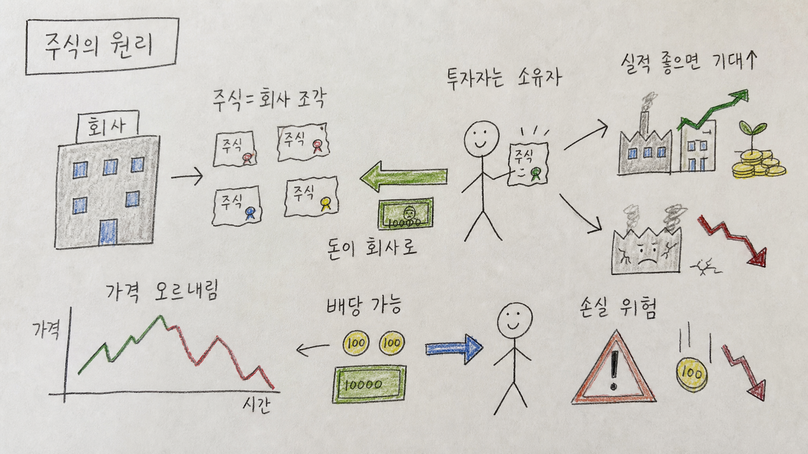

260505 주식의 원리 보고서모드2

> 버전: 보고서모드2
핵심 결론
- 🏢 주식은 단순 숫자가 아니라 회사의 일부 소유권임
- 📈 주가는 현재 실적보다 미래 기대와 리스크를 먼저 반영함
- ⚠️ 수익 기회는 소유권에서 나오지만, 손실 위험도 같은 자리에서 나옴
1. 주식이란 무엇인가
주식은 회사의 일부를 잘게 나눈 소유권이다.
투자자가 주식을 산다는 것은 그 회사의 아주 작은 조각을 소유한다는 뜻이다.
그래서 주주는 단순한 소비자가 아니라 회사의 성과와 위험을 함께 나누는 소유자에 가깝다.
2. 회사는 왜 주식을 발행하는가
회사는 성장하려면 돈이 필요하다.
공장을 짓고, 사람을 뽑고, 연구개발을 하고, 새로운 시장에 진출하려면 자본이 들어간다.
이때 회사는 은행에서 돈을 빌릴 수도 있지만, 주식을 발행해 투자자로부터 자금을 받을 수도 있다.
| 방식 | 회사 입장 | 투자자 입장 |
|---|---|---|
| 대출 | 갚아야 할 빚 | 이자를 받는 채권자 |
| 주식 발행 | 소유권 일부를 나눔 | 회사의 일부 소유자 |
주식은 빚이 아니라 소유권이다.
그래서 회사가 망하면 원금을 보장받지 못하지만, 회사가 크게 성장하면 그 성장의 과실을 함께 누릴 수 있다.
3. 투자자는 어떻게 돈을 버는가
주식 투자 수익은 크게 두 가지다.
| 수익 구조 | 설명 |
|---|---|
| 시세차익 | 산 가격보다 비싸게 팔아 얻는 이익 |
| 배당 | 회사가 이익 일부를 주주에게 나눠주는 돈 |
성장주는 주로 시세차익 기대가 크고, 성숙한 기업은 배당 매력이 중요할 수 있다.
다만 모든 회사가 배당을 주는 것은 아니다.
회사가 번 돈을 다시 성장에 투자하는 경우도 많다.
4. 주가는 왜 오르내리는가
주가는 단순히 회사가 좋은지 나쁜지만으로 움직이지 않는다.
시장은 회사의 현재 실적뿐 아니라 미래 성장, 금리, 경기, 경쟁, 투자자 심리까지 함께 반영한다.
| 주가에 영향을 주는 요소 | 예시 |
|---|---|
| 실적 | 매출, 이익, 마진 |
| 미래 기대 | 신제품, 시장 확대, AI 같은 성장 서사 |
| 금리 | 금리가 높으면 성장주의 현재 가치가 낮아질 수 있음 |
| 심리 | 공포와 탐욕에 따라 과도하게 움직일 수 있음 |
| 리스크 | 규제, 경쟁, 부채, 경영진 문제 |
그래서 좋은 회사의 주가도 떨어질 수 있고, 나쁜 회사의 주가도 단기적으로 오를 수 있다.
5. 주식의 핵심은 기대와 가격의 균형
주식 투자에서 가장 중요한 질문은 “좋은 회사인가?” 하나가 아니다.
더 중요한 질문은 “좋은 회사인데, 지금 가격도 합리적인가?”다.
좋은 회사라도 너무 비싸게 사면 오랫동안 수익률이 낮을 수 있다.
반대로 시장이 지나치게 싫어하는 회사도 실제 가치보다 싸다면 기회가 될 수 있다.
6. 반대의견과 리스크
| 리스크 | 설명 | 대응 |
|---|---|---|
| 원금 손실 | 주가는 내려갈 수 있고 회사가 망하면 큰 손실 가능 | 분산 투자, 포지션 관리 |
| 변동성 | 단기 가격은 감정적으로 움직임 | 투자 기간과 기준 설정 |
| 과대평가 | 기대가 너무 높으면 실적이 좋아도 하락 가능 | 밸류에이션 점검 |
| 정보 비대칭 | 개인은 모든 정보를 알기 어려움 | 공식 자료와 숫자 확인 |
| 심리 흔들림 | 공포에 팔고 탐욕에 사기 쉬움 | 매수·매도 원칙 필요 |
주식은 돈을 불릴 수 있는 강력한 도구지만, 원금이 보장되는 상품은 아니다.
7. 초보자가 잡아야 할 관점
처음 주식을 배울 때는 종목 이름보다 구조를 먼저 이해해야 한다.
주식은 차트 게임이기 전에 회사 소유권이고, 가격은 미래 기대의 압축된 결과다.
따라서 종목을 볼 때는 최소한 세 가지를 함께 봐야 한다.
- 이 회사는 어떻게 돈을 버는가
- 앞으로 더 성장할 수 있는가
- 지금 가격은 그 기대를 얼마나 반영했는가
최종 판단
주식의 원리는 단순하다.
회사는 성장 자금을 얻고, 투자자는 회사의 일부를 소유하며, 그 회사의 미래 가치에 참여한다.
하지만 실제 투자는 단순하지 않다.
주가는 실적, 기대, 심리, 금리, 리스크가 섞여 움직이기 때문에 좋은 회사와 좋은 가격을 분리해서 보는 눈이 필요하다.
※ 이 글은 투자 판단을 돕기 위한 교육용 설명이며, 매수·매도 추천이 아니다.
Jeremy's Insight by 🤖 딸깍봇 https://blog.naver.com/jeremylee0213